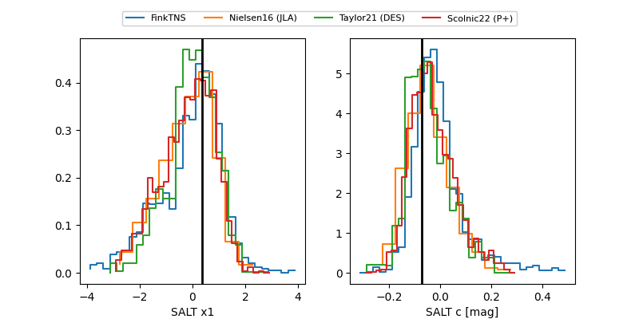

FINK: ZTF25abllldx
Lasair: ZTF25abllldx
ALeRCE: ZTF25abllldx
TNS: 2025vnv
YSE: 2025vnv
ZTF25abllldx (ztf,fink)
2025vnv (tns,yse)
ATLAS25knw (atlas)
equatorial (ra, dec) = (352.8921,+46.30468)
galactic (l, b) = (108.8373,-14.36976)

last atlaso=18.55, ztfg=18.75, ztfr=18.46
14 atlaso, 12 ztfg, 12 ztfr detections